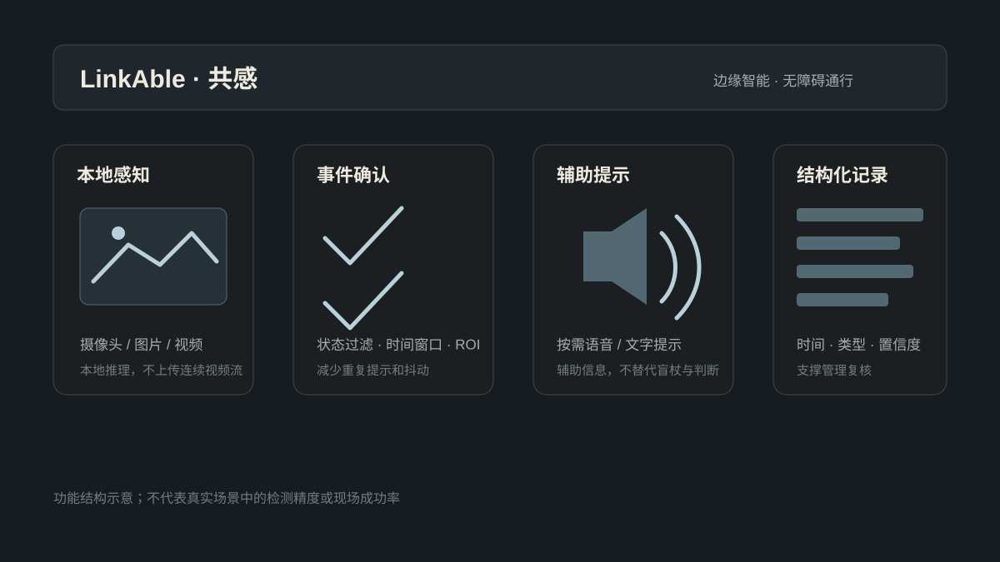

本地视觉感知
摄像头、图片或视频在边缘设备上处理，关注盲道占用、台阶、坡道与道路障碍等事件。
基于边缘智能的无障碍辅助通行感知原型：在本地处理视觉输入，把通道中的潜在风险转成稳定事件、简短提示和可复核的结构化记录。

功能结构示意；不代表真实场景中的检测精度、帧率或现场成功率。
摄像头、图片或视频在边缘设备上处理，关注盲道占用、台阶、坡道与道路障碍等事件。
通过区域、时间窗口和状态过滤减少抖动与重复提示，区分瞬时变化和持续风险。
按需要提供简短语音或文字信息，帮助理解周围环境；提示不替代盲杖、路标或个人判断。
保存事件时间、类型、置信度与处置状态，为校园和社区的无障碍设施复核提供依据。
核心感知在本地执行，云端只用于事后报告增强，不参与实时安全提示。
不默认保存原始画面，不上传连续视频流；可选上报只包含结构化事件。
不通过外观、人脸或行为推断用户是否残障，显式触发面向所有有需要的人。
论文中的要素识别与产品的占用检测是不同任务；历史指标不能直接作为当前产品结论。